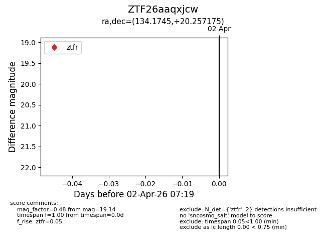
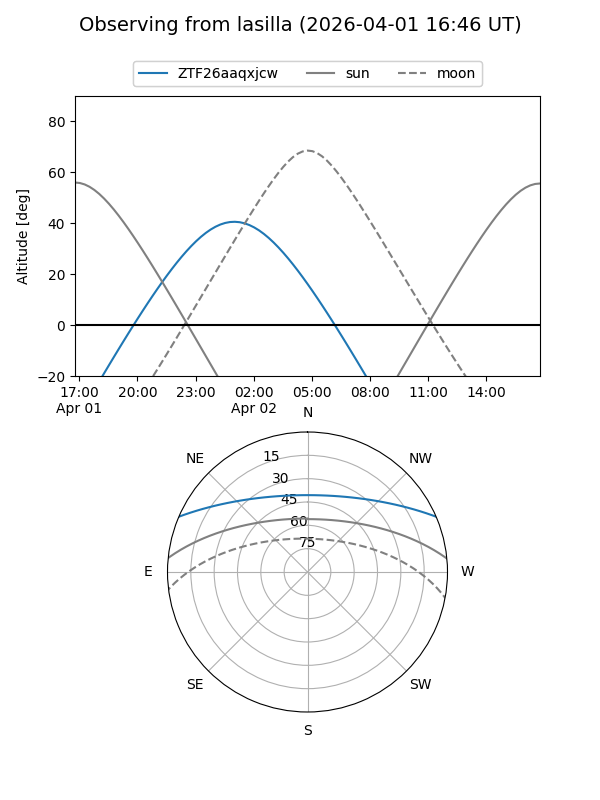
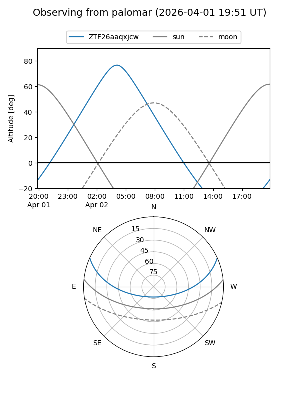

ZTF26aaqxjcw
Target ZTF26aaqxjcw at 2026-04-02 07:22
Aliases and brokers:
FINK: link
Lasair: link
ALeRCE: link
alt names
ZTF26aaqxjcw (ztf,fink_ztf)
Coordinates:
equatorial (ra, dec) = 134.1745,+20.25717
equatorial (HMS+DMS) = 08:56:41.88,+20:15:25.83
galactic (l, b) = (206.8210,+36.28713)
Flags:
Photometry:
last ztfr=19.14
2 ztfr detections
Lightcurve

Visibility


Additional plots